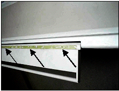
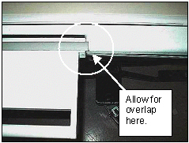
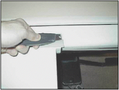

Operating Documentation
Direction 5133330-3, Rev# 14
Signa EXCITE HD 3.0T Service Methods
Module Version 2.0, Version Date 11/6/08
Operating Documentation |
| Required Persons | Preliminary Reqs | Procedure | Finalization |
|---|---|---|---|
| 1 | 54 minutes |
The creation of this procedure is the result of work done by Everest Castillo, Thomas Hulscher, Rick Neckerman, Kevin O’Connell, Robert Ralko, members of FIELD SERVICE SIX SIGMA GREEN BELT TEAM. (* Prices are approximant and given in USA dollars.)
| Item | Qty | Effectivity | Part# | Manufacturer | |
|---|---|---|---|---|---|
| Narrow (1 inch) Putty Knife | 1 | - | Local Purchase | - | |
| Rubber Protector such as “Armor All” (or equivalent) | 1 | - | Local Purchase | - | |
| Sharp Knife or Utility Knife | 1 | - | Local Purchase | - | |
| Towels or Rags | sufficient | - | Local Purchase | - | |
| Adhesive Remover such as “GOO GONE” (or equivalent) | 1 | - | Local Purchase | - | |
| Isopropyl Alcohol $ 0.87 ICV * | 1 | - | 46-183000P164 | - | |
| Neoprene Gloves (100 count box) $12.76 ICV * | 1 | - | 46-194427P400 (lg) P401 (xlg) | - | |
| Adhesive (one quart …fixes many bumpers) $5.63 ICV * | 1 | - | 46-170079P1 | - | |
| Brush (for application of adhesive) $2.00 ICV * | 1 | - | 46-194427P218 | - | |
| Bumper for Arm Board (if lost) $5.74 ICV * | 1 | - | 46-271017P2 | - | |
Remove table from magnetic field to a ventilated location.
Remove partially attached bumper(s) (if present).
Clean arm board bumper channel(s) completely with alcohol and/or adhesive remover, putty knife and towel/rag. See Illustration 1.
Illustration 1: ARM BOARD BUMPER CHANNEL

Clean old glue off bumper(s) with alcohol or adhesive remover/clean. Or if installing new bumpers, clean new bumper(s) with alcohol.
Apply adhesive to bumper channel and bumper surface per manufacturer directions (use gloves and brush). Install bumper in channel with some over lap at each end. Apply pressure to entire bumper to insure good adhesion. Repeat on second bumper if necessary. See Illustration 2.
Illustration 2: BUMPER INSTALLED WITH OVERLAP

Cut bumper ends at ~45 degree angles to match arm board edges. This will prevent catching on sheets, patients etc. See Illustration 3.
Illustration 3: CUT BUMPER ENDS

Reduce surface friction by applying the rubber protector (Armor All if available) to bumper surface(s).
Return table to customer for use.
No finalization steps.